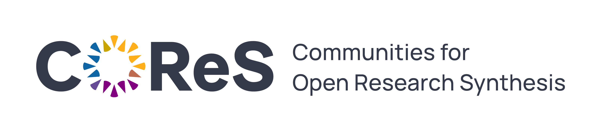

Section 16 About
We have put together this Wiki Page to provide information and documents, links, and useful tools to guide your through your preclinical systematic review. These resources have been put together using many CC-BY-4.0 sources including; SyRF, and Cochrane Interactive Learning. We thank these organisations and teams for making their resources available, definitely check out their resources as well!
This resource was last updated on: 17 March, 2025
16.1 To cite this resource
Preclinical Systematic Reviews & Meta-Analysis Wiki, (March, 2025), CAMARADES Berlin, QUEST-BIH Charité. Accessed from: https://www.CAMARADES.de
16.2 Acknowledge our services
At CAMARADES we provide services to support researchers in conducting high-quality systematic reviews of preclinical evidence. Engaging with our support services can take many forms, from attending our drop-in sessions, email consultation, to one-on-one sessions for the duration of your project. Each project team and review topic is unique, and the level of support required can vary across the life-cycle of your project.
As our services are free of charge, we greatly appreciate appropriate acknowledgement of our support in your published work.
If you have utilised our support services, we would be grateful for acknowledgment in your published work. For example, “We would like to thank [insert team member’s name] from CAMARADES Berlin, QUEST Center, Berlin Institute of Health @ Charité Universitätsmedizin for consultation [and/or support].”
For more extensive support, which may span multiple stages of the project or forms of support, we typically join the review team as a co-author, given our assistance meets the criteria for authorship according to the ICMJE recommendations (see more below). In this case, potential authorship will be based on discussion and informed by the published guidance, according to the individual circumstances of the project.
Your acknowledgement is essential to help us continue offering our services to the research community. We value your collaboration!
The ICMJE recommends that authorship be based on the following 4 criteria:
- Substantial contributions to the conception or design of the work; or the acquisition, analysis, or interpretation of data for the work; AND
- Drafting the work or reviewing it critically for important intellectual content; AND
- Final approval of the version to be published; AND
- Agreement to be accountable for all aspects of the work in ensuring that questions related to the accuracy or integrity of any part of the work are appropriately investigated and resolved.
16.3 Join the Systematic Review Community
COReS is a project to build a community around preclinical evidence synthesis. The project aims to bring together primary researchers and evidence synthesists to form communities and providing infrastructure and support systems to empower the community in the performance of systematic reviews in a collaborative manner. Join the community to improve the quality and value of preclinical research in biomedicine!
+ Check out resources and practices for synthesisable animal research on the COReS Hub.
+ Stay up-to-date with Community News via the newsletter. Sign up to the newsletter.
+ Join the discussion forum to share ideas, work collaboratively, and connect with researchers and methodologists. Make a free user account for the discussion forum here.
+ Follow the project on LinkedIn for regular update on education offers, talks, and project development. Check out COReS on LinkedIn here.
Find our more about joining the community on the COReS Hub.

16.4 Our Team
- Sarah McCann, PhD
- Torsten Rackoll, PhD
- Alexandra Bannach-Brown, PhD
- Sofija Vojvodic, MSc
- Friederike Elisabeth Kors, PhD
- Maria Arroyo Araujo, PhD
- Maria Economou, PhD
- Daniel Schulze, PhD
For more information on our team and our services and projects, please see the BIH QUEST website.
If you have questions about the resources, or would like to ask a question about your specific review, get in touch: Email us here
This resource is supported by Charité 3Rs & VolkwagenStruftung.
For more information about 3Rs at Charité – Universitätsmedizin Berlin, visit the Charité 3Rs Toolbox.
CAMARADES Berlin are located in the QUEST Center, Berlin Institute for Health

For more information about CAMARADES in Edinburgh, please click here.
Website by A Bannach-Brown on behalf of CAMARADES & CAMARADES Berlin
CAMARADES.Berlin@charite.de

This work is licensed under a Creative Commons Attribution 4.0 International License.